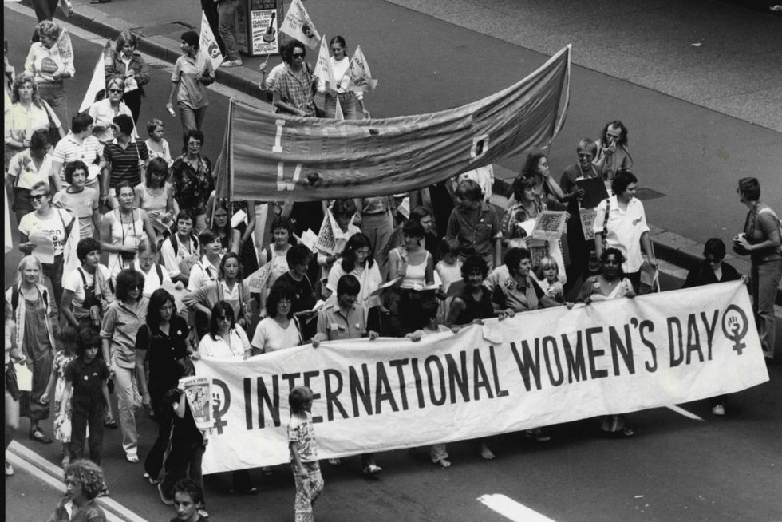
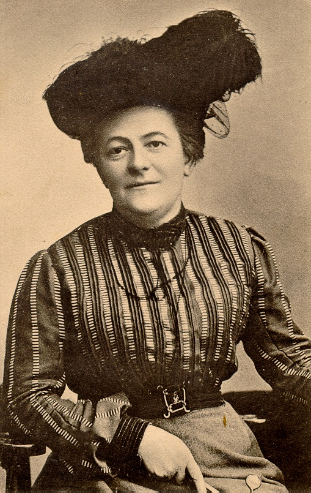
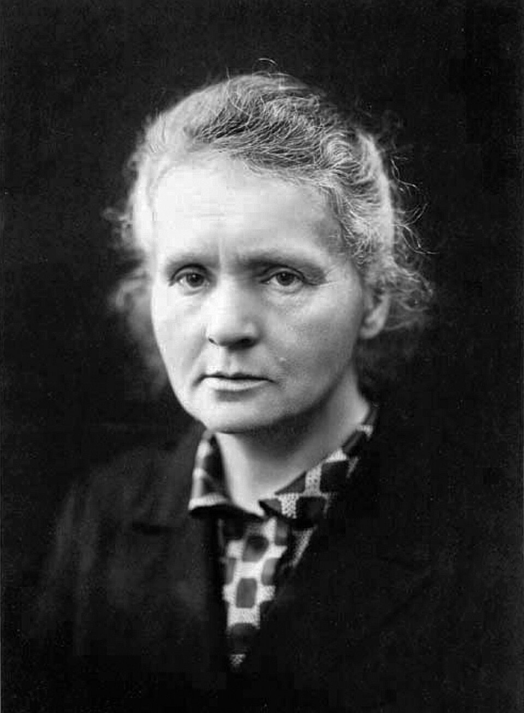
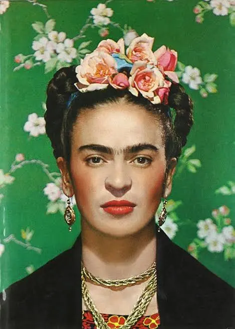
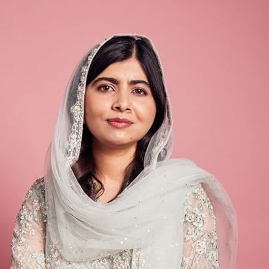

Sobre esta data
O Dia Internacional da Mulher, 8 de março, é celebrado em vários países em todo o mundo e representa um momento de reconhecimento das conquistas e contribuições das mulheres ao longo da história. Esta data simboliza a luta pela igualdade de direitos, pela valorização do papel da mulher na sociedade e pelo respeito pelas suas liberdades e oportunidades.
Ao longo dos anos, inúmeras mulheres destacaram-se nas mais diversas áreas, contribuindo de forma decisiva para o progresso das comunidades e para a construção de sociedades mais justas. Para além da celebração, este dia é também um momento de reflexão sobre os desafios que aindam persistem e sobre a importância de continuar a promover a igualdade, o respeito e a valorização das mulheres em todo o mundo.
44%
dos países ainda não possuem leis que garantam salário igual para trabalho de igual valor.
134 anos
é o tempo estimado para atingir a igualdade total de género ao ritmo atual.
26.5%
é a percentagem global de mulheres em parlamentos, longe da paridade necessária.
3x mais
tempo é dedicado por mulheres a tarefas domésticas não pagas em comparação aos homens.
História
No final do século XIX e início do século XX, muitas mulheres trabalhavam em fábricas em condições difíceis, com longas horas de trabalho e salários muito baixos. Perante esta realidade, começaram a organizar protestos e movimentos que exigiam mudanças, como melhores condições laborais e o direito ao voto.
Em 1908, milhares de trabalhadoras do setor têxtil manifestaram-se em Nova Iorque para denunciar a exploração e reivindicar direitos. Estes protestos ajudaram a dar visibilidade às desigualdades enfrentadas pelas mulheres. No ano seguinte, em 1909, foi celebrado nos Estados Unidos um Dia Nacional da Mulher.
A ideia de criar um dia internacional surgiu em 1910, durante uma conferência em Copenhaga, quando a ativista Clara Zetkin propôs a criação de uma data dedicada à luta pelos direitos das mulheres. A proposta foi aceite por representantes de vários países, e em 1911 o Dia Internacional da Mulher foi celebrado pela primeira vez em alguns países da Europa.
Mais tarde, em 1917, durante a Revolução Russa, milhares de mulheres saíram às ruas a 8 de março para protestar contra a fome, a guerra e as dificuldades que enfrentavam. Este acontecimento contribuiu para que a data de 8 de março ficasse associada ao Dia Internacional da Mulher.
Com o passar do tempo, esta data ganhou reconhecimento mundial. Em 1975, a Organização das Nações Unidas passou a celebrar oficialmente o Dia Internacional da Mulher. Hoje, o 8 de março é um momento de celebração das conquistas das mulheres, mas também de reflexão sobre os desafios que ainda existem na busca pela igualdade de direitos e oportunidades em todo o mundo.

Mulheres Marcantes na História
O Dia Internacional da Mulher é também uma oportunidade para recordar e celebrar mulheres que, ao longo da história, desafiaram barreiras, lutaram por igualdade e inspiraram gerações.
Estas são apenas cinco das inúmeras mulheres que transformaram o mundo.

Mary Wollstonecraft (1759-1797)
Filósofa e escritora inglesa, Mary Wollstonecraft é considerada uma das pioneiras do pensamento feminista. A sua obra mais conhecida, A Vindication of the Rights of Woman, defende a educação e a autonomia das mulheres, inspirando gerações a lutar pelos seus direitos.

Clara Zetkin (1857-1933)
Ativista alemã, Clara Zetkin foi a responsável por propor a criação do Dia Internacional da Mulher em 1910. Lutou pela igualdade laboral, pelo direito ao voto feminino e pelos direitos sociais das mulheres, tornando-se uma referência histórica no movimento pelos direitos das mulheres.

Marie Curie (1867-1934)
Cientista polonesa e francesa, Marie Curie foi a primeira mulher a ganhar um Prémio Nobel e a única a receber Nobel em duas áreas científicas (Física e Química). O seu trabalho pioneiro na radioatividade abriu caminhos na ciência e tornou-se símbolo da excelência feminina na investigação.

Frida Kahlo (1907-1954)
Pintora mexicana reconhecida pela sua arte intensa e pessoal, Frida Kahlo explorou temas como identidade, dor e feminilidade. Tornou-se um ícone cultural e uma inspiração para mulheres em todo o mundo, defendendo a liberdade de expressão e a força feminina.

Malala Yousafzai (1997-)
Ativista paquistanesa pelos direitos à educação, Malala Yousafzai sobreviveu a um atentado do Talibã e tornou-se a pessoa mais jovem premiada com o Prémio Nobel da Paz. A sua coragem e determinação continuam a inspirar a luta pelo acesso à educação e pela igualdade de oportunidades para meninas em todo o mundo.
Hoje em Dia
O Dia Internacional da Mulher continua a ser uma data importante para refletir sobre os direitos das mulheres e a igualdade de género. Apesar dos avanços significativos nas últimas décadas, ainda existem desafios em várias áreas da sociedade.
- Igualdade salarial: Em muitos países, mulheres continuam a receber menos do que homens por trabalho de igual valor.
- Participação política: A representação feminina em parlamentos e cargos de decisão ainda está longe da paridade.
- Educação: Embora o acesso à educação tenha melhorado, ainda existem regiões do mundo onde meninas enfrentam barreiras significativas poderem estudar.
- Combate à violência e discriminação: O Dia Internacional da Mulher também lembra a necessidade de erradicar todas as formas de violência, assédio e discriminação que afetam mulheres em diferentes contextos.
Além de celebrar as conquistas, este dia é um chamado à ação. É uma oportunidade para sociedades, empresas e indivíduos reforçarem o compromisso com a igualdade, promovendo ambientes mais justos, inclusivos e respeitadores dos direitos das mulheres em todo o mundo.